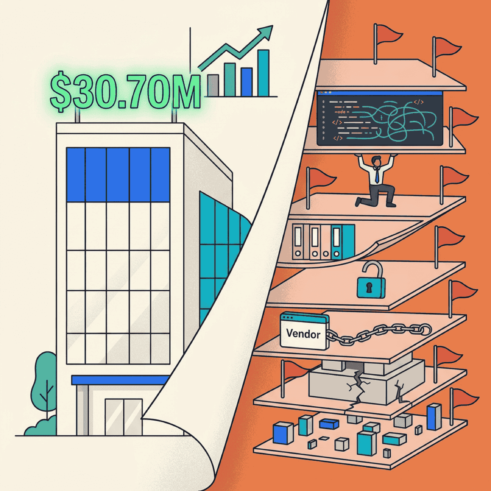

7 Red Flags That Kill Deals in Technical Due Diligence

TL;DR
- Technical debt, key person risk, and security gaps are the red flags that kill deal valuations — and acquirers know exactly where to look
- 53% of dealmakers discover major cyber issues only after closing — by then, you’ve already lost leverage
- Every red flag is fixable, but remediation takes 6-18 months — not 6 weeks before a deal
- A fractional CTO paired with AI dev tools can compress that timeline from years to months
83% of M&A deals fail to boost shareholder returns. That’s a staggering number. And while there are plenty of reasons deals go sideways — cultural mismatch, overvalued synergies, integration failures — technology problems are increasingly at the top of the list.
As a fractional CTO, I see these same red flags in company after company. They’re not exotic. They’re not surprises. They’re the predictable patterns that acquirers have learned to spot in the first week of due diligence.
The good news? Every one of them is fixable. But only if you know what buyers are looking for — and you start early enough to do something about it.
Why technology due diligence matters more than ever
Your technology is going to be audited. The question is whether you’re ready.
Technology isn’t just infrastructure anymore — for most mid-market companies, it IS the business. Your software, your data, your security posture — these are core assets that directly affect valuation.
Buyers have gotten sophisticated. A decade ago, tech due diligence was a checkbox. Today, acquirers bring in specialized teams that evaluate your codebase, architecture, security controls, and team structure with the same rigor they apply to your financials.
And fewer than 20% of acquirers successfully improve IT costs and quality after closing. That means buyers are pricing in your technology problems upfront. They’re not planning to fix them later — they’re discounting your valuation now.
Red flag #1: Technical debt consuming the roadmap
When more than 25% of developer time goes to maintenance and firefighting instead of building new features, it signals systematic underinvestment. Acquirers see this immediately.
McKinsey estimates that tech debt represents 20-40% of the average technology estate. And 30% of CIOs report that more than 20% of their budget for new products gets diverted to resolving tech debt instead.
If your dev team can’t ship new features because they’re constantly fixing old ones, buyers see a liability, not an asset.
The AI fix: AI code analysis tools can scan your entire codebase in hours — identifying the highest-risk debt, flagging security vulnerabilities, and prioritizing what to fix first. AI-assisted refactoring accelerates cleanup that used to take quarters into weeks.
Red flag #2: Key person dependency
Critical knowledge locked in one or two people’s heads is one of the fastest ways to kill a deal.
Valuation discounts of 10-25% are common for companies with key person risk — and that’s for public companies with some institutional structure. For private, closely held companies, the discount can be far steeper.
A “bus factor” of one means maximum risk. If your lead developer or CTO left tomorrow, could the team still ship? If the answer is no — or even “maybe” — acquirers will factor that into the price.
When critical knowledge lives in one person’s head, it doesn’t just create risk — it creates a ceiling on what the company is worth.
— Clarke Bishop
The AI fix: AI tools can reverse-engineer undocumented code into plain-language explanations, generate onboarding documentation, and map system dependencies automatically. What used to require months of knowledge transfer sessions can now be captured in weeks.
Red flag #3: Missing or outdated documentation
Architecture diagrams that haven’t been updated in three years. API specs that don’t match the actual endpoints. Runbooks that reference servers you decommissioned in 2024.
Then there are the “shadow integrations” — scripts and scheduled jobs that nobody remembers building but that quietly connect critical systems. They work fine until they don’t, and the only person who understands them left the company two years ago.
Poor documentation doesn’t just slow integration. It makes the acquirer question whether your team can operate at scale. If you can’t explain how your own systems work, why would a buyer trust that they can?
The AI fix: AI can generate architecture documentation, API specs, and runbooks directly from your existing code. It reads the codebase and produces the documentation your team never got around to writing. What was always the lowest-priority backlog item becomes a solvable problem.
Red flag #4: Security and compliance gaps
This is where deals die.
53% of dealmakers discover significant cybersecurity issues only after a deal closes. And 73% would walk away entirely if undisclosed breaches or security issues surfaced during due diligence.
The numbers are painful. 62% of deals are delayed by cybersecurity problems. The average breach costs $4.88M — the steepest jump since the pandemic.
Missing SOC 2 certification. Gaps in HIPAA compliance. No penetration testing history. No incident response plan. Any of these alone can stall a deal — together, they signal a company that treats security as an afterthought.
The AI fix: AI-powered security scanners identify vulnerabilities that manual code reviews miss. They can map your entire attack surface and generate compliance gap analyses for SOC 2 and HIPAA. This doesn’t replace a proper security program, but it dramatically accelerates the assessment.
Red flag #5: Vendor lock-in with no exit strategy
Your entire stack runs on one cloud provider. Your core application depends on a niche vendor’s proprietary platform. Your data lives in a format that only one tool can read.
If your critical vendor goes under, gets acquired, or raises prices 300% — what’s your plan?
If you don’t have one, acquirers see that as an ongoing liability they’ll inherit. Vendor lock-in means unpredictable costs, limited negotiating leverage, and a dependency that could blow up at any time.
No source code escrow. No data portability plan. No documented exit path. Every one of these gaps is a negotiating chip for the buyer — and a discount on your valuation.
The AI fix: AI-assisted code migration tools can analyze vendor-specific dependencies, generate abstraction layers, and produce portable alternatives. Exit strategies move from theoretical planning documents to executable migration plans.
Red flag #6: Architecture that doesn’t scale
The demo works perfectly. The pitch deck shows beautiful dashboards. But under real-world load? The system crumbles.
No load testing evidence. No performance benchmarks. A monolithic system with no clear path to modernization. Acquirers want to grow the business — if the technology can’t grow with it, the deal loses value fast.
This red flag is particularly insidious because everything looks fine at current scale. It only shows up when someone asks, “What happens when we double the user base?” If your answer involves hand-waving instead of data, buyers notice.
The technology that works at your current scale might be the biggest liability at the scale a buyer is planning for.
— Clarke Bishop
The AI fix: AI tools can analyze architecture patterns, identify scaling bottlenecks, suggest modernization paths, and generate load test scripts. You get evidence-based answers to the scalability question — not guesswork.
Red flag #7: No data governance or migration path
Data is often the most valuable asset in a deal — but only if it can be extracted, migrated, and integrated.
83% of data migration projects fail or exceed their budget. That’s not a typo. When acquirers see data silos across departments, no data dictionary, no schema documentation, and no integration plan, they’re pricing in a migration disaster.
Undocumented data relationships, inconsistent formats across systems, and no clear ownership of data quality — these problems don’t just make integration expensive. They make the acquirer question the value of the data itself.
The AI fix: AI can catalog data assets across your entire organization, generate data dictionaries, map schemas, and identify relationships between silos. The tedious, expensive work that nobody wants to do manually becomes automated — and you get a clear picture of what you actually have before a buyer asks.
What to do about it
Every red flag on this list is fixable. But fixing them takes intentional work and time — which is why starting early matters so much.
Start your tech audit 12-18 months before any potential exit. Don’t wait until a buyer is in the room. By then, you’re negotiating from weakness, and every red flag becomes a discount on your price.
Prioritize in this order:
- Security and compliance — these are deal killers, and they take the longest to remediate properly
- Key person risk — start documenting and cross-training now, before someone leaves
- Technical debt — tackle the highest-risk items first, not the most annoying ones
- Documentation — AI tools make this dramatically faster than it used to be
- Architecture, data governance, vendor lock-in — these require strategic decisions, not just execution
Here’s the critical point: a fractional CTO plus AI dev tools can accomplish in months what used to take years. AI compresses the remediation timeline across every red flag — automated code analysis, documentation generation, security scanning, architecture assessment. The 6-18 month remediation window becomes achievable precisely because these tools now exist.
You need the human judgment to know what matters — which red flags are deal-critical versus nice-to-have, how to prioritize when everything feels urgent, how to communicate progress to a board or PE partner. But you need AI tools to execute the fixes at a speed that actually fits the timeline.
The bottom line
These red flags aren’t exotic. They’re the same patterns that show up in company after company. The technology problems that kill M&A deals are almost never surprises — they’re the predictable result of years of deferred decisions.
Every one of them is fixable with time and intention. The companies that get the best valuations aren’t the ones with perfect technology. They’re the ones that did the work before the buyer showed up.
If you’re thinking about an exit in the next two to three years, now is the time to start. Not next quarter. Not when the LOI arrives. Now.
Want an objective assessment of your technology stack? Let’s talk about how a fractional CTO engagement can help you fix these red flags before a buyer ever looks.